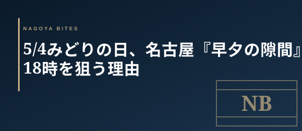

季節・イベント短信
5/4みどりの日、名古屋『早夕の隙間』戦略 — 業界人が連休中盤の17〜18時を狙う理由
5/4みどりの日。GW後半の中日で、家族需要は昼にピークアウトし、夜の19時台は観光客と地元帰省組で予約サイトが再び埋まる。業界人が今日選ぶのは『早夕の隙間』、17〜18時のスタートだ。理由を3つ共有する。

この記事はNAGOYA BITES — 名古屋の厳選1,100店超を業界視点で紹介するグルメガイドの一部です。
5/4が『早夕』に向く理由 — 需要の二峰性
5/4は祝日だが、5/3（憲法記念日）と5/5（こどもの日）に挟まれた中日にあたる。家族連れの外食需要は昼12時台と18時台に二峰化し、19時を過ぎると再び満席表示が並ぶ。一方、17時開店直後の17〜18時は、ファミリー層がホテルや実家に戻り始め、夜のメイン需要が立ち上がる前の『谷間』になる。業界人がこの時間帯を選ぶのは、満席表示の網にかからずに、しかも仕込みのフレッシュさが残る一巡目を取れるからだ。
① 通し営業店を狙え — GW中盤は中休み返上の店が増える
名古屋の老舗・中堅店は、平日は14時〜17時に中休みを取る運用が多い。だがGW期間中、特に5/3〜5/5は通し営業に切り替える店が一定数いる。理由は単純で、観光客の昼〜夕方の流動需要を逃さないため、そして中休み中の電話受け付けを止めないためだ。Googleマップの営業時間欄に『連休中は通し営業』『5/3〜5/5は中休みなし』と記載がある店は、17時台の入店で確実に席が取れる。これがGW中盤の最も読みやすいシグナルだ。
② 17時の電話 = 仕込みの確認線
5/4の午後、16時半〜17時に電話を入れて即出る店は、仕込みのリズムが整っており、当日17〜18時の入店をほぼ100％受けてくれる。逆に折り返しのない店は、本日休業か、19時台のフルブッキングで電話番が回せていないかのどちらか。早夕の隙間を狙う前提なら、17時台に空席を確保している店を選ぶのが定石だ。
③ 一人飲み・少人数こそ早夕の主役
17〜18時の早夕は、カウンター中心の小箱や、4名以下のテーブル運用の店と相性がいい。客単価4,000〜6,000円帯のアラカルト中心店なら、一人飲み・カップル・友人2〜3名で、19時のピーク前に1巡目の調理ペースで料理が出てくる。店側のオペも整っており、料理の温度・盛りつけのコンディションが最も良い時間帯になる。GW中盤の早夕は、業界人が『今夜の一杯』を切り出す、最もコストパフォーマンスの高い時間帯だ。
5/4夜の動き方
家族連れの本命19時は避け、17〜18時で1軒目を切り上げ、20時以降に二軒目で錦三・住吉町の小箱に流れるのが理想ルート。GW中盤の名古屋は『早夕＋遅夜』の二段構えで、混雑から一歩外れた時間帯に良い席が残っている。
Inside Perspective — 業界人の目利き
- 5/4は需要が二峰化し、17〜18時に『早夕の隙間』が生まれる
- 通し営業店はGW中盤の最も読みやすいシグナル — Googleマップの営業時間欄を確認
- 17時の電話即出は仕込みのリズムが整っている証拠 — 早夕入店の確度が高い